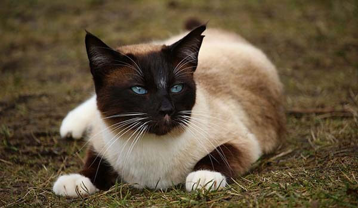
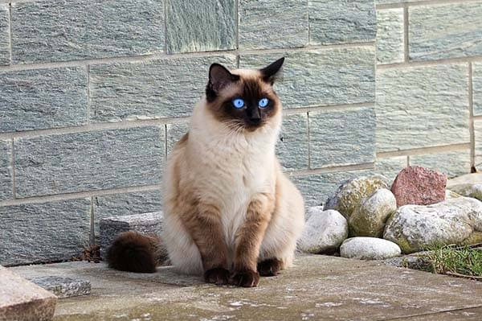

Mèo Xiêm thích sống ở những nơi có khí hậu ấm áp, chúng thường cuộn mình hoặc phởi nắng vào mỗi sáng. Tuy nhiên, mèo Xiêm cũng có thể thích nghi nhanh chóng với những môi trường sống khác nhau và chúng đặc biệt thích hợp với khí hậu nước ta.
Mèo Xiêm có tuổi thọ khá cao, có thể sống tới hơn 20 năm. Vì thế, nếu bạn đang cảm thấy lo lắng khi một ngày nào đó sẽ phải rời xa bé mèo yêu dấu và muốn níu giữ chúng bên mình càng lâu càng tốt thì mèo Xiêm đúng là lựa chọn tuyệt vời dành cho bạn.
Giống mèo này cũng rất ít rụng lông, bạn nên chải chuốt bộ lông cho chúng thường xuyên để loại bỏ lông chết và giúp chúng có diện mạo mượt mà hơn. Luôn lưu ý vệ sinh những vùng nhạy cảm cho bé mèo Xiêm của mình như mắt, mũi, tai để phòng ngừa các bệnh liên quan, giúp bé mèo phát triển mạnh khoẻ hơn.